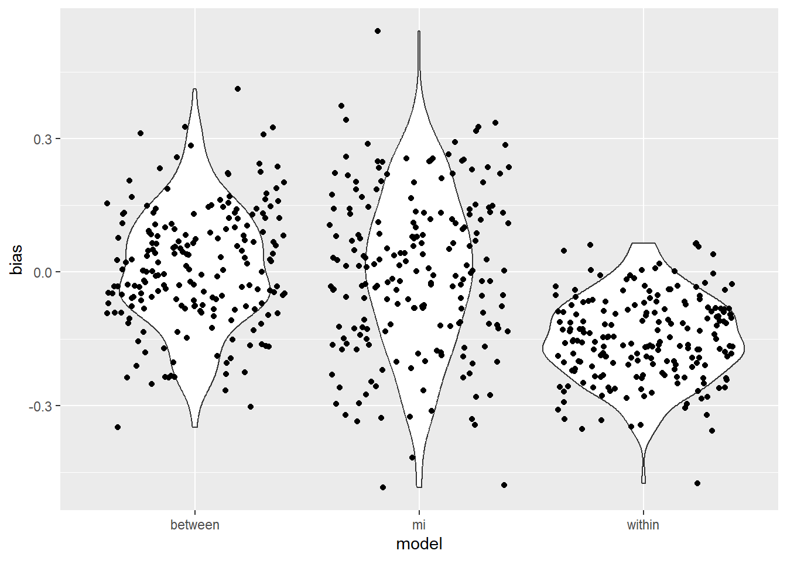

If we have measurement reactivity, the problem is that the act of taking the measurement at time 1 (\(y_1\)) acts as confounder, meaning we can’t know if \(\beta_1\) might look different if \(y_1\) were not measured.
A standard solution might be to omite the pretest and just do a between subjects comparison without any pretest as a covariate
\[y_2 = \beta_0 + \beta_1 treatment\]
One issue with this approach is it is possible that baseline scores interact with the treatment, and that becomes impossible to to measure
Our approach uses a planned missingness design, where participants are randomized into a design where \(y_1\) measurements are either observed or missing, and Type B auxiliary variables are used to impute the missing values, eliminating the effect of measurement reactivity.
I sketched out a simple simulation with the following data generating model
\(y_1\) is pretest measurement
\(y_2\) is posttest measurement
\(t_t\) is the target treatment
\(t_m\) is the treatment effect of measurement reactivity
\(t_{m,t}\) is a compensatory effect of measurement reactivity (how much measurement reactivity offsets the treatment effect)
\(R^2_{aux}\) is the proportion of variance in \(y_1\) explained by auxiliary variables
\(K\) is the number of auxiliary variables
\(N\) is the total sample size
\(n_m\) is the sample size where \(y_i\) is measured
\(treatment\) is the treatment condition (0 or 1)
\(measure\) is the measurement condition (0 or 1)
\(mod_y\) is the moderation effect of \(y_1\) on \(treatment\)
In the first version of the simple simulation I set
\(t_t = .3\)
\(t_m = .2\)
\(t_{m,t} = .75 (t_m)\), meaning that 75% of the effect of measurement “overlapped” with the treatment effect
\(R^2_{aux} = .33\)
\(N = 400\)
\(n_m = .4 (N)\)
\(K = 3\)
library(MASS)library(tidyverse)
Warning: package 'ggplot2' was built under R version 4.5.1
── Attaching core tidyverse packages ──────────────────────── tidyverse 2.0.0 ──
✔ dplyr 1.1.4 ✔ readr 2.1.5
✔ forcats 1.0.0 ✔ stringr 1.5.1
✔ ggplot2 4.0.0 ✔ tibble 3.2.1
✔ lubridate 1.9.4 ✔ tidyr 1.3.1
✔ purrr 1.0.4
── Conflicts ────────────────────────────────────────── tidyverse_conflicts() ──
✖ dplyr::filter() masks stats::filter()
✖ dplyr::lag() masks stats::lag()
✖ dplyr::select() masks MASS::select()
ℹ Use the conflicted package (<http://conflicted.r-lib.org/>) to force all conflicts to become errors
library(effectsize)library(mice)
Attaching package: 'mice'
The following object is masked from 'package:stats':
filter
The following objects are masked from 'package:base':
cbind, rbind
library(mitml)
*** This is beta software. Please report any bugs!
*** See the NEWS file for recent changes.
## Set parametersn <-400## Sample Sizer2 <- .33## R2 of missing variable on Type B aux variablesk <-3## number of aux variablescor_mat <-diag(1, k, k) ## Correlations for aux variables (independent for now) t_i <- .3## treatment of interestp_m <- .4## proportion in measured conditionn_m <-round(n * p_m) ## N in measured conditionn_no_m <- n - n_m ## N in unmeasured conditionm <-c(rep(1, n_m), rep(0, n_no_m)) ## dummy variable for measurementcond <-rep(c(0,1), n/2)t_m <- .2## treatment effect of measurementt_int <--.75* t_mn_imps <-10## set number of imputationsiter <-200res_df <-data.frame(between_res =rep(NA, iter),within_res =rep(NA, iter),mi_res =rep(NA, iter))for(i in1:iter){predictor_matrix <-mvrnorm(n, rep(0, k), cor_mat) ## Create predictor matrixresid <-sqrt(k * (1- r2)/r2) ## Define residual of yy1 <-rnorm(n, rowSums(predictor_matrix), resid) ## Define y as linear combo of predictors and errorsd_y <-sqrt((k + resid^2)) ## sd of yy1_s <- y1/sd_y ## standardize y1y2 <- y1_s +rnorm(n, t_i * cond + t_m * m + t_int * cond * m) ## define y2 as combo of predictorsy2_between <- y1_s +rnorm(n, t_i * cond) ## y2 for fully between subjects designy2_within <- y1_s +rnorm(n, t_i * cond + t_m * m + t_int * cond) ## y2 for fully between subjects designdf <-data.frame(y1 = y1_s, y2 = y2, y2_between = y2_between, y2_within = y2_within,m = m, cond = cond)lm_between <-lm(y2_between ~ cond, df) ## model for no pretestlm_within <-lm(y2_within ~ cond + y1, df) ## model where all get pretestres_df$between_res[i] <- lm_between$coefficients[2]res_df$within_res[i] <- lm_within$coefficients[2]df_impute <- df %>%mutate(y1 =ifelse(m ==0, NA, y1)) ## set planned missingnessdf_mice <-cbind(df_impute %>%select(y1), predictor_matrix) ## combine y1 with aux varsmimps <-mice(df_mice, m = n_imps, printFlag =FALSE) ## mice imputationpmm_imps <-complete(mimps, action ="long") %>%mutate(y2 =rep(df_impute$y2, n_imps),cond =rep(df_impute$cond, n_imps),m =rep(df_impute$m, n_imps)) ## add variables to imputed datasetpmm_imps_list <-as.mitml.list(split(pmm_imps, pmm_imps$.imp)) ## split datasetsanalysis_pmm <-with(pmm_imps_list, lm(y2 ~ y1 + cond + m + cond * m)) ## imputed modellm_impute <-testEstimates(analysis_pmm)res_df$mi_res[i] <-as.data.frame(lm_impute$estimates)$Estimate[3]}res_df <- res_df %>%mutate(between = between_res - t_i,within = within_res - t_i,mi = mi_res - t_i)res_df_long <- res_df %>%select(between, within, mi) %>%pivot_longer(1:3, names_to ="model", values_to ="bias")res_df_long %>%group_by(model) %>%summarize(mean_bias =mean(bias),rmse =sqrt(mean(bias^2)))
# A tibble: 3 × 3
model mean_bias rmse
<chr> <dbl> <dbl>
1 between 0.00934 0.133
2 mi 0.00293 0.178
3 within -0.151 0.178
ggplot(res_df_long, aes(x = model, y = bias)) +geom_violin() +geom_jitter()

The planned missingness (mi) condition and between subjects condition perform similarly here. The main advantage of the planned missingness condition is don’t need to administer a pretest to all of the participants.
However, now let’s consider a moderation effect of \(y_1\) and set \(mod_y = -.1\), meaning the effect of the treatment is reduced for people who start out with higher baseline scores. In the fully between subjects condition, it is impossible to estimate this moderation effect. We can only do so with some measurement or estimate of \(y_1\)
y_mod <--.1res_df_int <-data.frame(between_res =rep(NA, iter),within_res =rep(NA, iter),mi_res =rep(NA, iter),within_res_int =rep(NA, iter),mi_res_int =rep(NA, iter))for(i in1:iter){ predictor_matrix <-mvrnorm(n, rep(0, k), cor_mat) ## Create predictor matrix resid <-sqrt(k * (1- r2)/r2) ## Define residual of y y1 <-rnorm(n, rowSums(predictor_matrix), resid) ## Define y as linear combo of predictors and error sd_y <-sqrt((k + resid^2)) ## sd of y y1_s <- y1/sd_y ## standardize y1 y2 <-rnorm(n, y1_s + t_i * cond + y_mod * cond * y1_s + t_m * m + t_int * cond * m) ## define y2 as combo of predictors y2_between <- y1_s +rnorm(n, t_i * cond) ## y2 for fully between subjects design y2_within <- y1_s +rnorm(n, t_i * cond + t_m * m + t_int * cond) ## y2 for fully between subjects design df <-data.frame(y1 = y1_s, y2 = y2, y2_between = y2_between, y2_within = y2_within,m = m, cond = cond) lm_between <-lm(y2_between ~ cond, df) ## model for no pretest lm_within <-lm(y2_within ~ cond + y1 + y1 * cond, df) ## model where all get pretest res_df_int$between_res[i] <- lm_between$coefficients[2] res_df_int$within_res[i] <- lm_within$coefficients[2] res_df_int$within_res_int[i] <- lm_within$coefficients[4] df_impute <- df %>%mutate(y1 =ifelse(m ==0, NA, y1)) ## set planned missingness df_mice <-cbind(df_impute %>%select(y1), predictor_matrix) ## combine y1 with aux vars mimps <-mice(df_mice, m = n_imps, printFlag =FALSE) ## mice imputation pmm_imps <-complete(mimps, action ="long") %>%mutate(y2 =rep(df_impute$y2, n_imps),cond =rep(df_impute$cond, n_imps),m =rep(df_impute$m, n_imps)) ## add variables to imputed dataset pmm_imps_list <-as.mitml.list(split(pmm_imps, pmm_imps$.imp)) ## split datasets analysis_pmm <-with(pmm_imps_list, lm(y2 ~ y1 + cond + y1 * cond + m + cond * m)) ## imputed model lm_impute <-testEstimates(analysis_pmm) res_df_int$mi_res[i] <-as.data.frame(lm_impute$estimates)$Estimate[3] res_df_int$mi_res_int[i] <-as.data.frame(lm_impute$estimates)$Estimate[5]}res_df_int <- res_df %>%mutate(between = between_res - t_i,within = within_res - t_i,mi = mi_res - t_i,within_int = within_res - t_i,mi_int = mi_res - t_i)## main effectsres_df_long <- res_df_int %>%select(between, within, mi) %>%pivot_longer(1:3, names_to ="model", values_to ="bias")res_df_long %>%group_by(model) %>%summarize(mean_bias =mean(bias),rmse =sqrt(mean(bias^2)))
# A tibble: 3 × 3
model mean_bias rmse
<chr> <dbl> <dbl>
1 between 0.00934 0.133
2 mi 0.00293 0.178
3 within -0.151 0.178
ggplot(res_df_long, aes(x = model, y = bias)) +geom_violin() +geom_jitter()